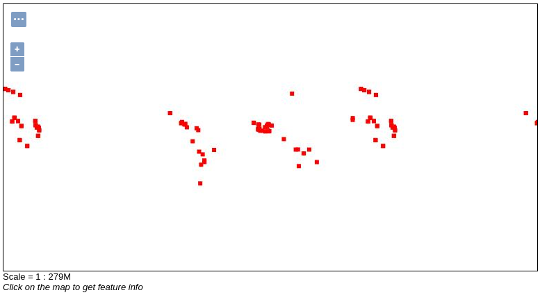
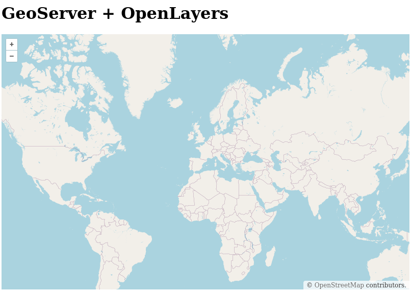

Serveurs cartographiques
Introduction aux serveurs cartographiques et à l’utilisation de GeoServer.
Objectifs
Comprendre ce qu’est un serveur cartographique et ce que sont les flux WMS, WFS, etc.
Connaître les principaux serveurs cartographiques avec un focus sur GeoServer, un serveur cartographique Open-Source.
Apprendre à déployer une instance de GeoServer à l’aide de Docker.
Publier des couches avec GeoServer et les styliser en passant par QGIS.
Lire les flux WMS de mon GeoServer dans une application OpenLayers basique.
Être capable de déterminer dans quelles situations on a besoin d’un serveur cartographique.
Cours
️TP - Prise en main de GeoServer
Déploiement de GeoServer à l’aide de Docker
Documentation GeoServer - Dépôt de l’image Docker
Ce TP suppose que Docker est installé sur la machine. Il a été écrit pour une machine Linux, certains chemins et lignes de commande peuvent donc être différents sur une machine Windows ou Mac.
Une fois que Docker est installé, lancez la commande suivante pour télécharger une image de GeoServer en version 2.26.0 :
docker pull docker.osgeo.org/geoserver:2.26.0Puis, pour construire un container à partir de l’image de GeoServer :
docker run -it -p 80:8080 docker.osgeo.org/geoserver:2.26.0Si vous n’avez pas eu de message d’erreur, rendez-vous sur http://localhost/geoserver et connectez-vous avec l’identifiant admin et le mot de passe geoserver. Si l’authentification a fonctionné, félicitations, vous avez réussi à faire tourner un container avec GeoServer !

Pas de panique ! On n’a pas besoin de savoir exactement comment fonctionne Docker pour ce TP. Si on veut simplifier :
Docker permet de faire tourner des services dans des containers créés à partir d’images.
Une image est une recette à suivre pour créer mon container. Elle demande à Docker de créer un container basé sur Debian, d’y installer GeoServer ou bien une base PostgreSQL avec l’extension postGIS, etc.
Un container est le produit d’une image. C’est un peu le plat cuisiné à partir de la recette. C’est à l’intérieur du container que tourne mon service comme ma base de données ou mon serveur web. On peut connecter plusieurs containers entre eux, pratique si on veut un site web et une base de données qui fonctionnent ensemble !
Un service est généralement une base de données (ex. PostgreSQL), un serveur de site web (ex. Apache), un serveur cartographique (ex. GeoServer), etc. Comme les bonnes pratiques demandent d’avoir un seul service par container, on va parler du “container GeoServer” pour dire “le container qui contient mon service GeoServer”, ça va plus vite.
Si ce n’est encore pas clair et que ça vous gêne pour la compréhension de la suite du TP, hop, on lève la main et on demande des explications, je suis là pour ça ! Et si vous voulez aller plus loin, rendez-vous sur la documentation officelle de Docker.
Pour vérifier que tout fonctionne, on va faire une petite manip rapide.
- En haut à droite de l’écran, si ce n’est pas déjà le cas, sélectionnez le langage “fr” pour passer l’interface en français.
- Allez dans “Espaces de travail” (menu à gauche de l’écran) et cliquez sur le bouton “Ajouter un nouvel espace de travail”.
- Appelez-le “mon_espace” et donnez lui un URI
mon_espace. - Vérfiez qu’il apparaît bien dans la liste de vos espaces (normalement, au-dessus de “ne”).
Ensuite, on va arrêter notre container Docker. Commencez par utiliser la commande suivante :
docker psVous devriez voir apparaître une ligne avec l’ID de votre container dans la colonne CONTAINER ID, l’image utilisée pour le construire dans la colonne IMAGE, d’autres informations qui ne nous servent pas dans ce TP et son nom dans la colonne NAME. La commande docker ps permet de lister les containers actifs en ce moment. On souhaite arrêter notre container avec la commande docker stop <container_name>. Pour cela, il faut utiliser le nom du container à la place de <container_name>. Par exemple, voici les informations de mon container :
CONTAINER ID IMAGE COMMAND CREATED STATUS PORTS NAMES
0a885cadf11d docker.osgeo.org/geoserver:2.26.0 "bash /opt/startup.sh" 8 seconds ago Up 7 seconds (health: starting) 0.0.0.0:80->8080/tcp, [::]:80->8080/tcp charming_pareLe nom de mon container est donc charming_pare. Pour arrêter mon container, je dois taper la commande suivante :
docker stop charming_pareQuand on tape des lignes de commande en bash, utilisez la touche tab pour auto-compléter la commande. Par exemple, ici, j’ai seulement tapé docker stop ch puis appuyé sur tab qui a complété le nom de mon container. Pratique, non ? N’hésitez pas à en abuser. Si l’auto-complete ne fonctionne pas, c’est qu’il ne trouve rien OU plusieurs résultats. Dans ce cas, continuez à écrire la commande à la main et réessayez.
Utilisez à nouveau la commande docker ps pour vérifier que ce container n’apparaît plus dans la liste. Normalement, si vous actualisez la page GeoServer, vous devriez avoir une erreur du type “localhost refused to connect”.
Alors, c’est bien sympa tout ça, mais en l’état, on ne va pas pouvoir ajouter de données dans notre container. Il faudrait pouvoir accéder au dossier /data de GeoServer. Heureusement, pour nous simplifier la vie, on peut utiliser Docker pour “connecter” deux dossiers en eux (monter, mount en anglais). Pour ça, il faut créer sur notre ordinateur un nouveau dossier dans lequel on mettra tout ce qu’on veut retrouver dans le /data de notre GeoServer. Promis, c’est la dernière étape aussi technique, ensuite je me détends et j’arrête de vous faire taper autant de lignes de commande.

D’abord, on supprime notre container. On va en créer un nouveau dans les étapes suivantes.
docker rm <nom_du_container>Ensuite, on va créer un dossier à monter sur le /data de notre container.
Allez dans Documents et créer un nouveau dossier “GeoServer”.
Copiez le chemin ABSOLU vers ce dossier. Par exemple, chez moi (Ubuntu), ça donne ça :
/home/marie/Documents/GeoServerRemplacez
"/absolute/path/on/host"dans la commande suivante et copiez-collez la quelque part, on ne sait jamais.
docker run -it -p 80:8080 --mount src="/absolute/path/on/host",target=/opt/geoserver_data/,type=bind docker.osgeo.org/geoserver:2.26.0- Exécutez la ligne de commande.
Maintenant, on va ajouter notre jeu de données land_matrix_mines à notre dossier /data.
Téléchargez le jeu de données land_matrix_mines.
Dans l’explorateur de fichiers de votre ordinateur, ouvrez votre dossier GeoServer. Normalement, vous auriez du voir apparaître plusieurs nouveaux dossiers. Allez dans
/dataet créez un nouveau dossiergeopackage.Glissez le fichier
land_matrix_mines.gpkgdans le dossiergeopackage.
Si vous ne pouvez pas créer de nouveau dossier, c’est que vous ne disposez pas des permissions suffisantes. Dans mon cas (sur Ubuntu), tous les dossiers appartenaient à l’utilisateur et au groupe root. Il faut utiliser la commande chown :
sudo chown -R <user>:<group> /chemin/vers/mon/dossierPour changer les droits de mon dossier `/home/marie/Documents/GeoServer` j’ai donc tapé :
sudo chown -R marie:marie /home/marie/Documents/GeoServerSi ça ne fonctionne pas, ne restez pas bloqués et appelez-moi, on règle ça ensemble.
C’est bon, ça fonctionne ? Parfait ! Les règles pour arrêter et démarrer son container restent les mêmes. Tout ce qu’il faut retenir, c’est qu’il ne faut pas supprimer ou déplacer votre dossier GeoServer sous peine de tout casser. Pour le reste, tout devrait fonctionner tranquillement.
# Lister les containers actifs
docker ps
# Lister tous les containers, même arrêtés
docker ps -a
# Démarrer mon container
docker start <nom_du_container>
# Arrêter mon container
docker stop <nom_du_container>
# /!\ Supprimer mon container
docker rm <nom_du_container>Vous avez survécu au déploiement du GeoServer, bien joué ! Prenez un moment pour souffler, allez vous chercher un café. La suite sera beaucoup moins prise de tête, c’est promis !

Espaces de travail, Entrepôts et Couches
Créer un espace de travail, c’est facile, on vient de le faire. Maintenant, on va créer un nouveau dépôt par défaut qu’on appellera land_matrix et dans lequel on ajoutera notre geopackage.
Allez dans “Espaces de travail” et cliquez sur “Ajouter un nouvel espace de travail”.
Nommez l’espace de travail “land_matrix” et donnez lui l’URI “land_matrix”.
Cochez “Espace de travail par défaut”.
Ciquez sur “Sauvegarder”.
Si tout va bien, on voit maintenant notre espace “land_matrix” dans la liste. On va pouvoir ajouter un entrepôt de données dans notre espace.
Allez dans “Entrepôts” et cliquez sur “Ajouter un nouvel entrepôt”. Vous allez voir une liste de tous les types d’entrepôts de données qui peuvent être ajoutés à votre espace de travail, par exempe du GeoPackage, une base PostGIS, un Shapefile ou encore un flux WMS distant.
Sélectionnez “GeoPackage”.
Nommez la source de données “land_matrix_mines” et ajoutez une petite description, par exemple “Transactions minières de la Land Matrix, 2024”.
Dans “Paramètres de connexion” cliquez sur “Parcourir…” à droite de “database *”.
Allez dans
data/geopackage/et cliquez sur le jeu de donnéesland_matrix_mines.gpkg.Videz le champ “passwd”.
Cliquez sur “Sauvegarder”.
Une fois de retour sur la page “Entrepôts”, vous devriez voir votre entrepôt “land_matrix_mines” associé à l’espace de travail “land_matrix”. On avance ! Maintenant, on veut publier et lire des couches.
Allez dans “Couches” et cliquez sur “Ajouter une nouvelle couche”.
Sélectionnez “land_matrix:land_matrix_mines”. Vous devriez voir apparaître une liste de couches.
Cliquez sur “Publier” à droite de la couche “deals”.
L’onglet de publication de couche permet de configurer la couche et d’y ajouter de la métadonnée. Dans ce TP, on se concentrera sur les informations “cruciales” pour définir une couche, mais vous pourrez toujours allez plus loin en utilisant la documentation GeoServer sur les couches.
Les trois choses à faire absolument à chaque fois dans l’onglet données sont :
Renseigner les informations dans “Informations de base sur les donneés” comme le nom de la couche et un résumé. N’oubliez pas de laisser “Activé” et “Publié” cochés pour rendre la couche accessible depuis l’extérieur.
Vérifier le “Système de Référence de Coordonnées (SRC)” qui doit être pré-rempli en EPSG:4326 dans notre cas. Il correspond à la projection WGS84 utilisée dans la grande majorité des cas en cartographie web.
Définir les “Emprises” qui se calculent automatiquement sur GeoServer en cliquant sur “Calculer depuis les limites du SRS” et “Calculées sur les emprises natives”.
Cliquez ensuite sur “Appliquer” pour sauvegarder vos changements et scrollez en haut de la page pour accéder à l’onglet “Publication”.
- Dans “Paramètres de couche”, cochez Interrogeable et vérifiez que le style par défaut est bien “point”.
Cliquez sur “Sauvegarder”. La couche devrait maintenant apparaître au sommet du tableau. Cliquez simplement sur le nom de la couche (ici “deals”) pour la paramétrer à nouveau si besoin. Pour vérifier que tout a fonctionné, on peut prévisualiser la couche directement depuis GeoServer.
Allez dans “Prévisualisation de la Couche” (menu à gauche de l’écran).
Sur la ligne de la couche “deals”, sélectionnez “OpenLayers”.
Vous devriez voir apparaître quelque chose comme ça, avec des informations supplémentaires si vous cliquez sur des points (possible car notre couche est interrogeable) :

Si c’est bon, bravo, ça a fonctionné ! Si vous voyez des artefacts autour des points, c’est normal. Ce que vous regardez, ce ne sont pas des polygones mais une image produite à partir de notre couche et transmise comme un flux WMS par notre serveur. L’intérêt, c’est qu’on peut afficher rapidement des couches très lourdes de cette manière, là où un GeoJSON commencerait à ramer. Et on peut toujours zoomer et cliquer sur un point pour l’interroger. C’est super pratique ! Ce flux WMS est récupéré et lu par une petite appli OpenLayers, c’est comme ça que vous êtes capable de voir la couche sur votre page web (vous sentez venir la transition vers les prochains cours, là ?).
Bon, super, on a notre couche moche. Maintenant, on en fait quoi de tous ces points rouges ?

Facile. On va d’abord la rendre un peu plus belle, puis on va la lire dans notre propre application OpenLayers et commencer à faire des trucs cools avec. Mais avant, comme vous avez tout compris à ce qu’on vient de faire, ajoutez toutes les autres couches du geopackage à votre espace de travail. Quand vous avez réussi à toutes les prévisualiser (et pleuré devant leur style austère), créez un nouveau projet QGIS et importez aussi ces couches.
Styliser mes couches
Documentation GeoServer “Styling”
Pour le moment, afficher notre couche “deals” va juste donner l’impression que notre carte a attrappé la varicelle. On va commencer par changer son apparence en faisant des points bien ronds et d’une couleur qui crie moins “DANGER !!!”. Pour ça, on va devoir créer un nouveau style.
Allez dans “Styles” et cliquer sur “Ajouter un nouveau style”.
Nommez le style “deals” et choisissez l’espace de travail “land_matrix”. Conservez le format SLD, c’est le seul disponible sans ajouter d’extensions.
Pour nous aider, GeoServer propose de générer un SLD par défaut. Sélectionnez “Point” et cliquez sur “Générer…”. Vous devriez vous retrouver avec un fichier .xml décrivant la couche.
On pourrait aller lire en détail le SLD Cookbook de GeoServer pour écrire notre fichier manuellement, mais on est plus malins que ça. On a un super outil à disposition qui s’appelle QGIS.
- Si vous ne l’avez pas déjà fait, créez un projet QGIS et ajoutez les couches Land Matrix.
- Donnez un style sympa aux points de la couche deals. J’ai changé la couleur pour les rendre orange.
- Allez dans les propriétés de votre couche et dans “Symbologie”. Tout en bas, choisissez “Style” et “Enregistrer le style…”.
- Choisissez l’option “En tant que fichier SLD” et choisissez le chemin et le nom de votre fichier en cliquant sur “…” après “Fichier”. J’ai appelé le mien “deals.sld”
- Allez chercher votre fichier et ouvrez-le avec un éditeur de texte (Notepad, VSCode, peu importe).
- Copiez le contenu.
- Retournez sur votre page GeoServer, supprimez tout le contenu de la zone de texte et collez à la place le contenu de
deals.sld. Voilà ce que ça donne pour moi :
<?xml version="1.0" encoding="UTF-8"?>
<StyledLayerDescriptor xmlns="http://www.opengis.net/sld" xmlns:se="http://www.opengis.net/se" xmlns:ogc="http://www.opengis.net/ogc" xsi:schemaLocation="http://www.opengis.net/sld http://schemas.opengis.net/sld/1.1.0/StyledLayerDescriptor.xsd" xmlns:xsi="http://www.w3.org/2001/XMLSchema-instance" xmlns:xlink="http://www.w3.org/1999/xlink" version="1.1.0">
<NamedLayer>
<se:Name>gpkg_land_matrix — deals</se:Name>
<UserStyle>
<se:Name>gpkg_land_matrix — deals</se:Name>
<se:FeatureTypeStyle>
<se:Rule>
<se:Name>Deal</se:Name>
<se:PointSymbolizer>
<se:Graphic>
<se:Mark>
<se:WellKnownName>circle</se:WellKnownName>
<se:Fill>
<se:SvgParameter name="fill">#ffd157</se:SvgParameter>
</se:Fill>
<se:Stroke>
<se:SvgParameter name="stroke">#232323</se:SvgParameter>
<se:SvgParameter name="stroke-width">0.5</se:SvgParameter>
</se:Stroke>
</se:Mark>
<se:Size>7</se:Size>
</se:Graphic>
</se:PointSymbolizer>
</se:Rule>
</se:FeatureTypeStyle>
</UserStyle>
</NamedLayer>
</StyledLayerDescriptor>Vous pouvez prévisualiser la légende en cliquant sur “Aperçu de la légende”. Le bouton “Ajouter une légende” permet quand à lui d’ajouter une image customisée plutôt qu’une génération automatique. C’est pratique quand on a des légendes complexes, mais pas pour le moment. Ensuite, sauvegardez la légende quand elle vous convient.
Une autre méthode pour charger le contenu d’un fichier de style .sld est de cliquer sur “Browse” en dessous de “Fichier de style”. Allez chercher votre fichier .sld et cliquez sur “Charger…” pour vous économiser quelques copier-coller par la suite !
Maintenant, il faut dire à GeoServer qu’on veut utiliser ce style avec notre couche “deals”.
- Allez dans “Couches”.
- Sélectionnez la couche “deals et allez dans l’onglet”Publication”.
- Dans “Style par défaut”, sélectionnez “land_matrix:deals” et Sauvegardez.
Maintenant, vous pouvez de nouveau prévisualiser la couche “deals” et voilà ! Nos points sont ronds et jaunes. Vous savez maintenant créer un nouveau style SLD depuis QGIS et l’ajouter à une couche dans GeoServer !

Normalement, vous commencez à bien comprendre le fonctionnement de GeoServer et la publication des couches. Créez un style de couleur unique pour “deals_by_country” qu’on utilisera comme pseudo fond de carte. Ensuite, créez un style en cercles proportionnels pour “deals_by_country_centroid” en vous basant sur l’attribut “surface_ha”.
Je ne veux pas voir de polygones “deals_by_country” de différentes couleurs. On n’utilise pas de carte choroplèthe pour représenter une valeur absolue, elles servent pour les valeurs relatives ou les catégories.

Une fois que vous avez au moins ajouté votre style à “deals_by_country” dans GeoServer, vous pouvez passer à la suite. Si vous avez un train de retard, cliquez sur les boutons ci-dessous pour dérouler mes styles et les copier-coller dans votre GeoServer.
<?xml version="1.0" encoding="UTF-8"?>
<StyledLayerDescriptor xmlns="http://www.opengis.net/sld" xmlns:se="http://www.opengis.net/se" xmlns:ogc="http://www.opengis.net/ogc" xsi:schemaLocation="http://www.opengis.net/sld http://schemas.opengis.net/sld/1.1.0/StyledLayerDescriptor.xsd" xmlns:xsi="http://www.w3.org/2001/XMLSchema-instance" xmlns:xlink="http://www.w3.org/1999/xlink" version="1.1.0">
<NamedLayer>
<se:Name>gpkg_land_matrix — deals_by_country</se:Name>
<UserStyle>
<se:Name>gpkg_land_matrix — deals_by_country</se:Name>
<se:FeatureTypeStyle>
<se:Rule>
<se:Name>Single symbol</se:Name>
<se:PolygonSymbolizer>
<se:Fill>
<se:SvgParameter name="fill">#fdbf6f</se:SvgParameter>
<se:SvgParameter name="fill-opacity">0.35</se:SvgParameter>
</se:Fill>
<se:Stroke>
<se:SvgParameter name="stroke">#232323</se:SvgParameter>
<se:SvgParameter name="stroke-width">1</se:SvgParameter>
<se:SvgParameter name="stroke-linejoin">bevel</se:SvgParameter>
</se:Stroke>
</se:PolygonSymbolizer>
</se:Rule>
</se:FeatureTypeStyle>
</UserStyle>
</NamedLayer>
</StyledLayerDescriptor><?xml version="1.0" encoding="UTF-8"?>
<StyledLayerDescriptor xmlns="http://www.opengis.net/sld" xmlns:se="http://www.opengis.net/se" xmlns:ogc="http://www.opengis.net/ogc" xsi:schemaLocation="http://www.opengis.net/sld http://schemas.opengis.net/sld/1.1.0/StyledLayerDescriptor.xsd" xmlns:xsi="http://www.w3.org/2001/XMLSchema-instance" xmlns:xlink="http://www.w3.org/1999/xlink" version="1.1.0">
<NamedLayer>
<se:Name>gpkg_land_matrix — deals_by_country_centroid</se:Name>
<UserStyle>
<se:Name>gpkg_land_matrix — deals_by_country_centroid</se:Name>
<se:FeatureTypeStyle>
<se:Rule>
<se:Name>201 - 5466</se:Name>
<se:Description>
<se:Title>201 - 5466</se:Title>
</se:Description>
<ogc:Filter xmlns:ogc="http://www.opengis.net/ogc">
<ogc:And>
<ogc:PropertyIsGreaterThanOrEqualTo>
<ogc:PropertyName>suface_ha</ogc:PropertyName>
<ogc:Literal>200.81000000000000227</ogc:Literal>
</ogc:PropertyIsGreaterThanOrEqualTo>
<ogc:PropertyIsLessThanOrEqualTo>
<ogc:PropertyName>suface_ha</ogc:PropertyName>
<ogc:Literal>5466.3999999999996362</ogc:Literal>
</ogc:PropertyIsLessThanOrEqualTo>
</ogc:And>
</ogc:Filter>
<se:PointSymbolizer>
<se:Graphic>
<se:Mark>
<se:WellKnownName>circle</se:WellKnownName>
<se:Fill>
<se:SvgParameter name="fill">#e5b636</se:SvgParameter>
</se:Fill>
<se:Stroke>
<se:SvgParameter name="stroke">#232323</se:SvgParameter>
<se:SvgParameter name="stroke-width">0.5</se:SvgParameter>
</se:Stroke>
</se:Mark>
<se:Size>4</se:Size>
</se:Graphic>
</se:PointSymbolizer>
</se:Rule>
<se:Rule>
<se:Name>5466 - 20413</se:Name>
<se:Description>
<se:Title>5466 - 20413</se:Title>
</se:Description>
<ogc:Filter xmlns:ogc="http://www.opengis.net/ogc">
<ogc:And>
<ogc:PropertyIsGreaterThan>
<ogc:PropertyName>suface_ha</ogc:PropertyName>
<ogc:Literal>5466.3999999999996362</ogc:Literal>
</ogc:PropertyIsGreaterThan>
<ogc:PropertyIsLessThanOrEqualTo>
<ogc:PropertyName>suface_ha</ogc:PropertyName>
<ogc:Literal>20412.80000000001018634</ogc:Literal>
</ogc:PropertyIsLessThanOrEqualTo>
</ogc:And>
</ogc:Filter>
<se:PointSymbolizer>
<se:Graphic>
<se:Mark>
<se:WellKnownName>circle</se:WellKnownName>
<se:Fill>
<se:SvgParameter name="fill">#e5b636</se:SvgParameter>
</se:Fill>
<se:Stroke>
<se:SvgParameter name="stroke">#232323</se:SvgParameter>
<se:SvgParameter name="stroke-width">0.5</se:SvgParameter>
</se:Stroke>
</se:Mark>
<se:Size>10</se:Size>
</se:Graphic>
</se:PointSymbolizer>
</se:Rule>
<se:Rule>
<se:Name>20413 - 61376</se:Name>
<se:Description>
<se:Title>20413 - 61376</se:Title>
</se:Description>
<ogc:Filter xmlns:ogc="http://www.opengis.net/ogc">
<ogc:And>
<ogc:PropertyIsGreaterThan>
<ogc:PropertyName>suface_ha</ogc:PropertyName>
<ogc:Literal>20412.80000000001018634</ogc:Literal>
</ogc:PropertyIsGreaterThan>
<ogc:PropertyIsLessThanOrEqualTo>
<ogc:PropertyName>suface_ha</ogc:PropertyName>
<ogc:Literal>61375.88199999996868428</ogc:Literal>
</ogc:PropertyIsLessThanOrEqualTo>
</ogc:And>
</ogc:Filter>
<se:PointSymbolizer>
<se:Graphic>
<se:Mark>
<se:WellKnownName>circle</se:WellKnownName>
<se:Fill>
<se:SvgParameter name="fill">#e5b636</se:SvgParameter>
</se:Fill>
<se:Stroke>
<se:SvgParameter name="stroke">#232323</se:SvgParameter>
<se:SvgParameter name="stroke-width">0.5</se:SvgParameter>
</se:Stroke>
</se:Mark>
<se:Size>16</se:Size>
</se:Graphic>
</se:PointSymbolizer>
</se:Rule>
<se:Rule>
<se:Name>61376 - 160220</se:Name>
<se:Description>
<se:Title>61376 - 160220</se:Title>
</se:Description>
<ogc:Filter xmlns:ogc="http://www.opengis.net/ogc">
<ogc:And>
<ogc:PropertyIsGreaterThan>
<ogc:PropertyName>suface_ha</ogc:PropertyName>
<ogc:Literal>61375.88199999996868428</ogc:Literal>
</ogc:PropertyIsGreaterThan>
<ogc:PropertyIsLessThanOrEqualTo>
<ogc:PropertyName>suface_ha</ogc:PropertyName>
<ogc:Literal>160220.00000000005820766</ogc:Literal>
</ogc:PropertyIsLessThanOrEqualTo>
</ogc:And>
</ogc:Filter>
<se:PointSymbolizer>
<se:Graphic>
<se:Mark>
<se:WellKnownName>circle</se:WellKnownName>
<se:Fill>
<se:SvgParameter name="fill">#e5b636</se:SvgParameter>
</se:Fill>
<se:Stroke>
<se:SvgParameter name="stroke">#232323</se:SvgParameter>
<se:SvgParameter name="stroke-width">0.5</se:SvgParameter>
</se:Stroke>
</se:Mark>
<se:Size>22</se:Size>
</se:Graphic>
</se:PointSymbolizer>
</se:Rule>
<se:Rule>
<se:Name>160220 - 1509612</se:Name>
<se:Description>
<se:Title>160220 - 1509612</se:Title>
</se:Description>
<ogc:Filter xmlns:ogc="http://www.opengis.net/ogc">
<ogc:And>
<ogc:PropertyIsGreaterThan>
<ogc:PropertyName>suface_ha</ogc:PropertyName>
<ogc:Literal>160220.00000000005820766</ogc:Literal>
</ogc:PropertyIsGreaterThan>
<ogc:PropertyIsLessThanOrEqualTo>
<ogc:PropertyName>suface_ha</ogc:PropertyName>
<ogc:Literal>1509612</ogc:Literal>
</ogc:PropertyIsLessThanOrEqualTo>
</ogc:And>
</ogc:Filter>
<se:PointSymbolizer>
<se:Graphic>
<se:Mark>
<se:WellKnownName>circle</se:WellKnownName>
<se:Fill>
<se:SvgParameter name="fill">#e5b636</se:SvgParameter>
</se:Fill>
<se:Stroke>
<se:SvgParameter name="stroke">#232323</se:SvgParameter>
<se:SvgParameter name="stroke-width">0.5</se:SvgParameter>
</se:Stroke>
</se:Mark>
<se:Size>29</se:Size>
</se:Graphic>
</se:PointSymbolizer>
</se:Rule>
</se:FeatureTypeStyle>
</UserStyle>
</NamedLayer>
</StyledLayerDescriptor>Lire mes flux dans une autre application
Courage, on touche au but. Vous aurez bientôt fait le tour du fonctionnement basique de GeoServer. Maintenant qu’on a nos couches, on veut pouvoir les lire.
Pour commencer, on va rapidement vérifier qu’on communique bien avec notre GeoServer en utilisant QGIS et la requête GetCapabilities du serveur. Cette requête, lorsqu’elle réussit, nous répond avec un fichier .xml qui explique à QGIS tout ce que le serveur est capable de faire, et notamment quelles couches peuvent être affichées.
Dans QGIS, cliquez sur “Ajouter une couche” et sélectionnez “WMS”.
Dans l’onglet “Couches”, cliquez sur “Nouveau”.
Appelez la connexion “mon_geoserver” et collez l’url
GetCapabilitiesdans “URL”. Elle devrait être identique à celle-ci :
http://localhost/geoserver/land_matrix/wms?service=WMS&version=1.1.0&request=GetCapabilitiesPour vérifier que votre requête est bonne, allez dans GeoServer, affichez n’importe quelle couche en prévisualisation et copiez l’adresse.
http://localhost/geoserver/land_matrix/wms?service=WMS&version=1.1.0&request=GetMap&layers=land_matrix%3Adeals&bbox=-180.0%2C-90.0%2C180.0%2C90.0&width=768&height=384&srs=EPSG%3A4326&styles=&format=application/openlayersSupprimez tout ce qui se trouve après “request=” et ajoutez “GetCapabilities”.
http://localhost/geoserver/land_matrix/wms?service=WMS&version=1.1.0&request=GetCapabilities- Cliquez ensuite sur “Connexion” et vérifiez qu’une liste de couche apparaît et qu’elle contient bien vos couches “deals”, etc.
Vous pouvez afficher la couche dans QGIS avec “Add” si vous le souhaitez. L’essentiel, c’est qu’on a vérifier que notre serveur émet bien des flux WMS pour nos couches et qu’on peut bien les lire. On va maintenant faire la même chose dans une application OpenLayers. Comme on n’a pas encore commencé les cours, je vous donne le code. Vous verrez, ça ressemble beaucoup à Leaflet. Dans le dossier de votre choix, créez un document index.html et collez le contenu suivant :
<!DOCTYPE html>
<html lang="en">
<head>
<title>GeoServer + OpenLayers</title>
<meta charset="UTF-8">
<meta name="viewport" content="width=device-width">
<!-- CSS -->
<link rel="stylesheet" href="https://cdn.jsdelivr.net/gh/openlayers/openlayers.github.io@main/dist/en/v7.1.0/ol/ol.css" />
<style>
#map {
height: 500px;
width: 800px;
}
</style>
</head>
<body>
<h1>GeoServer + OpenLayers</h1>
<div id="map"></div>
<!-- OpenLayers JS-->
<script src="https://cdn.jsdelivr.net/gh/openlayers/openlayers.github.io@main/dist/en/v7.1.0/ol/dist/ol.js"></script>
<!-- App code -->
<script>
// OSM layer and source
var source_osm = new ol.source.OSM()
var layer_osm = new ol.layer.Tile({ source: source_osm })
// GeoServer layer and source
// Map
var map = new ol.Map({
target: 'map',
layers: [ layer_osm ],
view: new ol.View({
center: ol.proj.fromLonLat([2.1833, 41.3833]),
zoom: 2
})
});
</script>
</body>
</html>Double-cliquez sur index.html pour l’ouvrir dans le navigateur. Vous devriez voir apparaître une carte avec un fond OSM. On va ajouter nos couches GeoServer à cette carte.

Sous la section commentée “GeoServer Layer and source”, ajoutez les lignes suivantes :
var url_geoserver = 'http://localhost/geoserver/land_matrix/wms'
var source_geoserver = new ol.source.ImageWMS({
url: url_geoserver,
params: {'LAYERS': 'land_matrix:deals'},
serverType: 'geoserver',
})
var layer_geoserver = new ol.layer.Image({ source: source_geoserver })Et ajoutez layer_geoserver à la liste de couches de map :
// Map
var map = new ol.Map({
target: 'map',
layers: [ layer_osm, layer_geoserver ],
view: new ol.View({
center: ol.proj.fromLonLat([2.1833, 41.3833]),
zoom: 2
})
});Actualisez la carte. Vous devriez maintenant voir apparaître la couche “deals” de l’entrepôt “land_matrix” ! Décortiquons rapidement ces lignes de code.
var url_geoserver = 'http://localhost/geoserver/land_matrix/wms'On récupère l’url de notre serveur. Si vous ne la trouvez pas, allez dans votre GeoServer et prévisualisez n’importe quelle couche. Récupérez l’url et coupez tout après “wms”. land_matrix est l’URI que nous avons donné à notre espace de travail (voir la section Espaces de travail du TP).
var source_geoserver = new ol.source.ImageWMS({
url: url_geoserver,
params: {'LAYERS': 'land_matrix:deals'},
serverType: 'geoserver',
})On crée ensuite une nouvelle source de données de type ImageWMS. On indique l’url de la source, à savoir l’url de notre espace de données GeoServer stocké dans la variable url_geoserver. L’image prend aussi un ou plusieurs paramètres. On indique dans ‘LAYERS’ la couche qu’on souhaite afficher. Celle ligne s’écrit toujours sous la forme :
'LAYERS' : '<entrepôt>:<couche>'Si vous avez un doute, allez dans “Prévisualisation de la couche” et regardez le contenu de la colonne “Nom”. C’est la valeur à donner à ‘LAYERS’.
Enfin, on renseigne le type du serveur, ici ‘geoserver’. Ce paramètre permet à OpenLayers de communiquer plus facilement avec GeoServer lorsque vous utiliserez des fonctionnalités plus avancées. De manière générale, cela vous permet aussi de vous souvenir du type de serveur avec lequel vous communiquez.
Chouette, après tout ça on a enfin réussi à créer, lire et afficher un flux WMS ! Sauf que, il manque encore quelque chose… la légende ! Et là vous me dites “pitié, j’en peux plus, j’ai la tête qui va exploser”. Allez, encore un petit effort. On a vu que GeoServer est capable de générer tout seul une légende, il nous suffit donc de la récupérer. Pour ça, rien de plus facile ! Le serveur distribue les images comme il distribue les couches de données. Il nous suffit de récupérer l’image en question et l’afficher dans une nouvelle <div> sur notre carte.
On reviendra en détail sur le fonctionnement des légendes dans le TP sur OpenLayers. Commencez par créer une <div> pour la légende sous <div id="map"></div> :
<div id="map"></div>
<div><img id="legend" /></div>Notre script permettra de modifier la source de l’image legend en interrogeant GeoServer à chaque fois qu’on fera changer la résolution de la carte. Dans le tag <script>, en dessous du code de la carte “Map”, ajoutez les lignes suivantes :
<!-- App code -->
<script>
//…
// Function to update the legend
function updateLegend(resolution) {
const graphicUrl = source_geoserver.getLegendUrl(resolution, { 'LEGEND_OPTIONS' : 'forceLabels:on' });
const img = document.getElementById('legend');
img.src = graphicUrl;
};
// Initial legend
const resolution = map.getView().getResolution();
updateLegend(resolution);
// Update legend when resolution changes
map.getView().on('change:resolution', function (event) {
const resolution = event.target.getResolution();
updateLegend(resolution);
});
</script>En résumé :
La fonction
updateLegend()permet de récupérer l’url de la légende depuis notre source GeoServersource_geoserveren utilisant la méthodegetLegendUrl(). On modifie ensuite la source de notre image<img id="legend" />sur l’url de la légende.La fonction
getLegendUrl()a besoin de connaître la résolution de la carte pour fonctionner.Lorsque la carte est créée pour la première fois, on stocke sa résolution dans la variable
resolution. La méthodegetView()de l’objetmappermet de récupérer la valeur de cette résolution. Ensuite, on exécute notre fonctionupdateLegend()pour récupérer la légende une première fois.Pour mettre à jour la légende lorsque la résolution change, on écoute les évènements
change:resolutionde la map. À chaque fois que la résolution change, on va récupérer à nouveau cette résolution et exécuter la fonctionupdateLegend().
<!DOCTYPE html>
<html lang="en">
<head>
<title>GeoServer + OpenLayers</title>
<meta charset="UTF-8">
<meta name="viewport" content="width=device-width">
<!-- CSS -->
<link rel="stylesheet" href="https://cdn.jsdelivr.net/gh/openlayers/openlayers.github.io@main/dist/en/v7.1.0/ol/ol.css" />
<style>
#map {
height: 500px;
width: 800px;
}
</style>
</head>
<body>
<h1>GeoServer + OpenLayers</h1>
<div id="map"></div>
<div><img id="legend" /></div>
<!-- OpenLayers JS-->
<script src="https://cdn.jsdelivr.net/gh/openlayers/openlayers.github.io@main/dist/en/v7.1.0/ol/dist/ol.js"></script>
<!-- App code -->
<script>
// OSM layer and source
var source_osm = new ol.source.OSM()
var layer_osm = new ol.layer.Tile({ source: source_osm })
// GeoServer layer and source
var url_geoserver = 'http://localhost/geoserver/land_matrix/wms'
var source_geoserver = new ol.source.ImageWMS({
url: url_geoserver,
params: {'LAYERS': 'land_matrix:deals'},
serverType: 'geoserver',
})
var layer_geoserver = new ol.layer.Image({ source: source_geoserver })
// Map
var map = new ol.Map({
target: 'map',
layers: [ layer_osm, layer_geoserver ],
view: new ol.View({
center: ol.proj.fromLonLat([2.1833, 41.3833]),
zoom: 2
})
});
// Function to update the legend
function updateLegend(resolution) {
const graphicUrl = source_geoserver.getLegendUrl(resolution, { 'LEGEND_OPTIONS' : 'forceLabels:on' });
const img = document.getElementById('legend');
img.src = graphicUrl;
};
// Initial legend
const resolution = map.getView().getResolution();
updateLegend(resolution);
// Update legend when resolution changes
map.getView().on('change:resolution', function (event) {
const resolution = event.target.getResolution();
updateLegend(resolution);
});
</script>
</body>
</html>Ouf ! On a enfin une légende. Pour ceux qui ont encore le temps et l’énergie, je vous propose d’afficher les autres couches et leur légende sur la carte, au moins “deals_by_country_centroids” pour avoir nos cercles proportionnels. C’est parti !

Conclusion(s)
C’est quoi l’intérêt du serveur carto, déjà ?
Centralisation de la donnée et mise à jour
Distribution de la donnée
Gestion des droits
Bien quand on a une organisation et bcp de données, s’intègre très bien dans une IDG
Bien pour les couches Raster et les couches Vecteur lourdes qui peuvent être servies en tant qu’images (WMS)
Connexion directe à une base de données PostgreSQL
Possibilité d’écrire des requêtes SQL pour former les couches
Possibilité de créer des styles complexes “à la QGIS”.
Est-ce que j’en ai besoin pour mon projet GeoNum ?
- Ça dépend des données que vous utilisez et ce que vous en faites. Le mieux c’est d’en discuter avec les profs !
Je n’utilise pas de connexion à une base de données, je préfère juste afficher des couches avec un style complexe. Ce serait pas plus simple si on pouvait directement importer les couches d’un projet QGIS ?

TP - QGIS Server avec LizMap
En cours de rédaction, revenez plus tard !